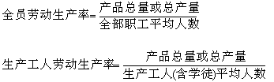
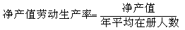
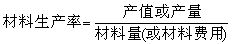
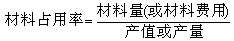
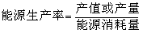
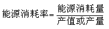
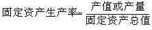
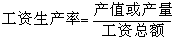
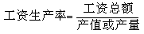
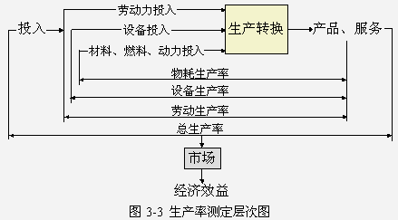

1 . 教学安排
2 . 生产率及提高生产率的意义
3 . 生产率测定
 生产率测定的意义
生产率测定的意义
生产率的种类
生产率计算公式
生产率测定的实施
我国工业生产率测定
4 . 生产率管理
5 . 提高企业生产率的途径
6 . 思考与练习题
 返回课程学习首页
返回课程学习首页
我国工业生产率测定
(一)常用的生产率指标
我国在工业部门和企业经济的效益指标体系中，通常采用以下几个主要的生产率指标：
1．劳动生产率
劳动生产率是指人们在生产过程中进行劳动的效率，反映劳动者在一定时间内创造使用 价值的能力。它是我国企业和国民经济统计中所用的一项最主要的生产指标。它属于单要素生产率，并且通常衡量一个时期的静态生产率值。
劳动生产率的测定通常采用以下方法和指标：
直接法：以工人用单位劳动量所生产的产品数量或产值来测定，这是劳动生产率的正指标，用来说明一个车间、企业、地区或整个工业部门的劳动生产率水平，其公式为：
逆自法：用生产单位产品所消耗的劳动量来测定，这是劳动生产率的逆指标，一般用于企业内部制定劳动定额、安排作业计划及编制定员和劳动计划等，其公式为：
计算劳动生产率时，通常采用如下度量单位来计算产出和投入。
产出：实物指标、标准实物指标、价值指标；
投入：劳动消耗量度量单位，如：人·时、人·日等。
根据所考察的劳动力种类和范围，常用的劳动生产率指标有全员劳动生产率、生产工人劳动生产率，全员劳动生产率受生产工人比重大小的影响，反映出人员结构的合理程度，可作为企业调整生产和非生产人员比例参考。生产工人劳动生产率表明直接参与生产的劳动力水平，可为改进管理提供依据。

此外，为了更好地反映活劳动的生产效率，有利于编制劳动生产率计划，企业通常还采用“净产值劳动生产率”指标：

2．材料生产率
材料生产率是指每单位材料(或材料费用)所提供的产值或产量。

常用的材料占用率是指每单位产值或产量占用的材料，它是材料生产率的倒数。

3．能源生产率
能源生产率是指每单位量能源所提供的产值或产量。

目前常用的能源消耗率是指每单位产值或产量消耗的能源是，它能源生产率的倒数。

4．固定资产生产率
固定资产生产率是指每单位固定资产值所提供的产值或产量。

常用的固定资产占用率是指每单位产值或产量占用的固定资产，它是固定资产生产率的倒数。
5．流动资金生产率
流动资金生产率是指每单位流动资金值所提供的产值或产量。
常用的流动资金占用率是指每单位产值或产量所占用的流动资金值，它是流动资金生产率的倒数。
6．工资生产率
工资生产率是指单位工资值所提供的产值或产量。

常用的工资占用率是指每单位产值或产量占用的工资额，它是工资生产率的倒数。

(二)工业企业生产率测定层次
工业企业生产率的一般分为三个阶段：
第一阶段：在生产操作层，测定各投入因素的使用效率，即劳动生产率和资源生产率，包括：材料生产率、燃料和动力生产率、设备生产率。
第二阶段：在工厂管理层，测定总产出量与总成本的关系，以此作为工厂的总生产率，考察工厂的总生产成绩。
第三阶段：在整个企业范围内，测定总生产率对于经济效益的贡献，以考察整个企业的生产经营成果。
生产率测定层次可用图3-3来表示。
